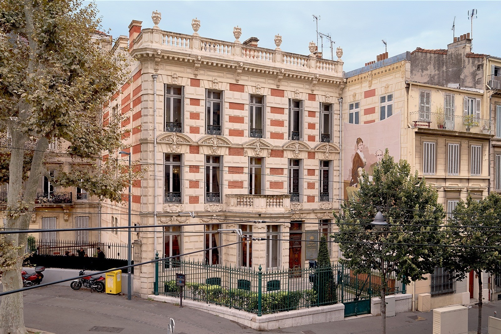
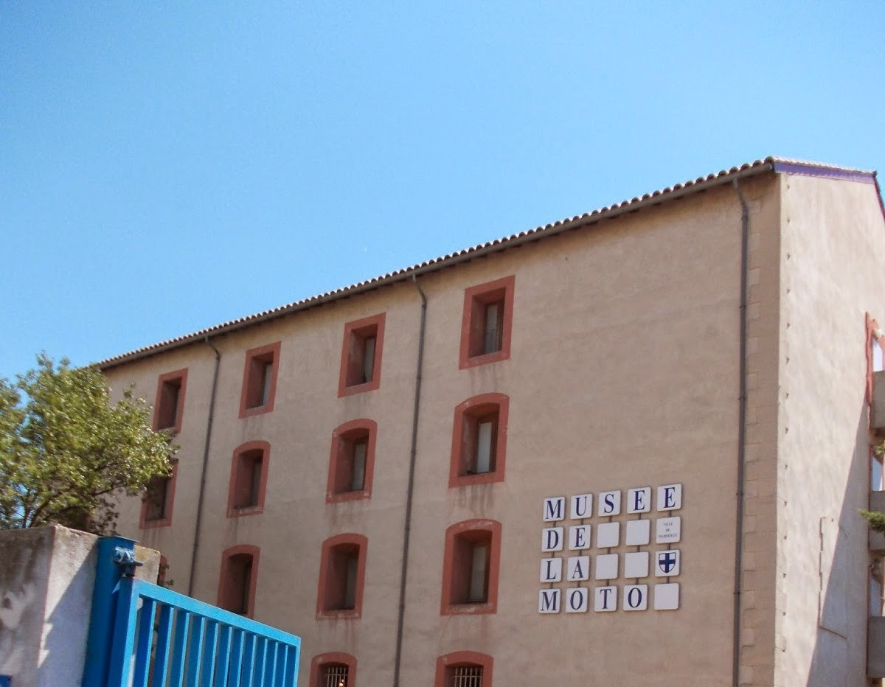

Mucem
1. Le Mucem, est un musée situé à Marseille. Il se consacre à l'exploration des cultures méditerranéennes à travers les âges. Installé sur le site historique du Fort Saint-Jean et relié au Vieux-Port par une passerelle, le Mucem présente des expositions couvrant des thèmes tels que l'archéologie, l'ethnographie, l'art contemporain et les civilisations méditerranéennes. Le musée offre également une vue panoramique sur la mer Méditerranée. Le Mucem joue un rôle majeur dans la mise en valeur du patrimoine méditerranéen et favorise la compréhension des diverses influences culturelles de cette région.
Mémorial de deportations
2. Le Mémorial des Déportations de Marseille est un lieu commémoratif dédié aux victimes de la déportation pendant la Seconde Guerre mondiale, spécifiquement celles parties du port de Marseille vers les camps nazis. Il vise à sensibiliser sur l'Holocauste à travers des témoignages, des documents et des objets historiques.
Musée Regards de Provence
3. Le Musée Regards de Provence à Marseille met en lumière l'art et la culture de la région Provence-Alpes-Côte d'Azur. Il présente une collection d'œuvres d'artistes provençaux, mettant en avant la diversité artistique de la région. Installé dans l'ancienne station sanitaire maritime, le musée offre également une vue panoramique sur le Vieux-Port. Le Musée Regards de Provence constitue un lieu emblématique pour découvrir l'histoire et l'identité artistique de la Provence.
Muséum dhistoire naturelle de Marseille
4. Le Muséum d'Histoire Naturelle de Marseille est un établissement dédié à la préservation et à la promotion de la biodiversité. Situé à Marseille, il propose des expositions interactives et éducatives sur la faune, la flore et la géologie de la région méditerranéenne. Le musée s'engage à sensibiliser le public à la conservation de la nature et à la diversité biologique. Il abrite également des collections scientifiques, des spécimens naturalisés et des espaces d'apprentissage, faisant du Muséum un lieu instructif et fascinant pour les amateurs de sciences naturelles.

Musée des enfants
5. Le Préau des Accoules à Marseille est un espace dédié aux enfants, intégré au Musée des Docks Romains. Il propose des activités éducatives et ludiques pour les jeunes visiteurs, mettant l'accent sur l'apprentissage à travers des jeux et des ateliers. Cet espace favorise une approche interactive et pédagogique pour permettre aux enfants de découvrir de manière amusante l'histoire et le patrimoine de la région.
Musée des Docks romains
6. Le Musée des Docks Romains à Marseille présente l'histoire portuaire de la ville à travers la mise en valeur des vestiges archéologiques des docks romains. Il offre un aperçu fascinant de l'activité commerciale et maritime dans la région antique. Le musée propose également des espaces interactifs, dont le Préau des Accoules, destiné aux enfants, pour une expérience éducative et ludique.
Musée dArchéologie
7. Le Musée d'Archéologie de Marseille met en lumière l'histoire de la ville à travers des collections archéologiques riches. Il expose des artefacts et des vestiges allant de l'Antiquité à l'époque médiévale, offrant ainsi un voyage à travers les différentes périodes de l'histoire locale. Le musée offre une perspective unique sur le patrimoine archéologique de Marseille et de sa région.

Musée dHistoire de Marseille
8. Le Musée d'Histoire de Marseille retrace l'évolution de la ville depuis la préhistoire jusqu'à nos jours. À travers des expositions et des collections variées, le musée offre un aperçu captivant de l'histoire sociale, économique, et culturelle de Marseille. Situé au cœur du Vieux-Port, il constitue un incontournable pour ceux qui souhaitent comprendre l'histoire riche et diverse de cette cité méditerranéenne.

Mémorial de la Marseillaise
9. Le Mémorial de la Marseillaise, situé à Marseille, rend hommage à l'hymne national français, la Marseillaise. Ce lieu commémoratif met en lumière l'histoire de la rédaction de l'hymne pendant la Révolution française et son lien avec la ville de Marseille. À travers des expositions et des documents historiques, le mémorial célèbre l'importance culturelle et symbolique de la Marseillaise dans l'identité nationale.
Musée Cantini
10. Le Musée Cantini à Marseille est dédié à l'art moderne et contemporain. Il abrite une collection variée d'œuvres, notamment des peintures, des sculptures et des dessins du XXe siècle. Situé dans un bel hôtel particulier, le musée offre aux visiteurs un aperçu de l'évolution des courants artistiques au cours de cette période. Il constitue un lieu incontournable pour les amateurs d'art contemporain dans la région.
Musée Grobet-Labadié
11. Le Musée Grobet-Labadié à Marseille présente une collection exceptionnelle d'arts décoratifs et d'objets d'art datant principalement du XVIIIe siècle. Installé dans un hôtel particulier, le musée offre aux visiteurs un voyage à travers le raffinement et l'élégance de l'époque, mettant en avant des meubles, des objets en porcelaine, des tableaux et d'autres trésors artistiques. C'est un lieu idéal pour découvrir l'art de vivre à Marseille au cours de cette période.
Musée des Beaux-Arts
12. Le Musée des Beaux-Arts de Marseille abrite une riche collection d'œuvres artistiques allant du XVIe au XIXe siècle. Situé au Palais Longchamp, le musée présente des peintures, des sculptures, des dessins et des objets d'art. Les visiteurs peuvent apprécier des chefs-d'œuvre de célèbres artistes français et étrangers, offrant ainsi un panorama de l'histoire de l'art à travers les époques. Le Musée des Beaux-Arts de Marseille constitue une destination culturelle majeure pour les amateurs d'art.
Musée de la Moto
13. Le Musée de la Moto de Marseille propose une collection variée de motos, retraçant l'évolution de ces véhicules emblématiques au fil des décennies. Les visiteurs peuvent y découvrir des modèles classiques, des prototypes et des objets liés à l'histoire de la moto. Installé dans un cadre dédié aux passionnés, le musée offre une immersion dans l'univers fascinant de la moto, mettant en valeur son impact culturel et technologique.
Musée des Arts décoratifs, de la Faïence et de la Mode
14. Le Musée des Arts Décoratifs, de la Faïence et de la Mode à Marseille propose une collection diversifiée d'arts décoratifs, de faïences régionales et d'objets liés à l'histoire de la mode. Installé dans l'ancien château Borély, le musée offre aux visiteurs un voyage à travers l'esthétique et le savoir-faire artistique dans ces domaines. C'est un lieu idéal pour apprécier l'élégance et l'artisanat à travers différentes époques.
Musée dArt Contemporain
15. Le Musée d'Art Contemporain de Marseille se consacre à l'art contemporain, présentant des œuvres innovantes et variées d'artistes locaux, nationaux et internationaux. Situé au cœur de la cité phocéenne, le musée offre aux visiteurs une immersion dans les expressions artistiques les plus actuelles, contribuant ainsi à la scène artistique dynamique de la ville.